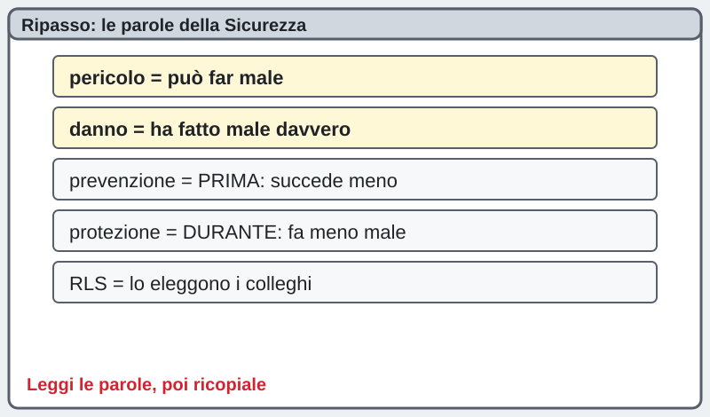
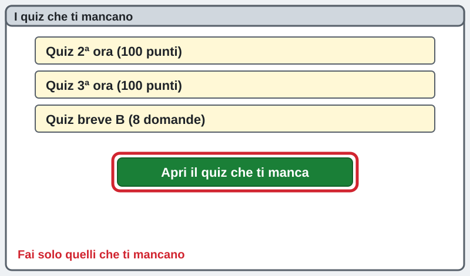
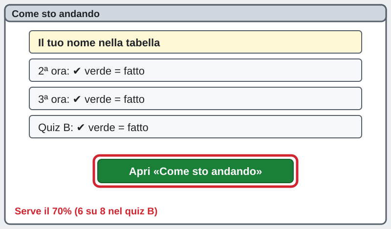

1INF · Sicurezza · mercoledì 04/11/2026 · recupero (ripasso e quiz)
Recupero Sicurezza: quiz da rifare
تعويض السلامة: اختبارات للإعادة
安全课补课：要重做的测验
La pagina viene aggiornata spesso durante la lezione: premi F5 per vedere la versione nuova. · اضغط F5 لرؤية النسخة الجديدة. · 按 F5 查看新版本。
Chi sei? · من أنت؟ · 你是谁？
Scrivi nome e cognome: serve al cruscotto per vedere a che punto sei.
Sei bloccato? Scrivi la domanda nella casella dell'assistente in fondo alla pagina: ti risponde subito. Alza la mano solo se il PC non funziona.
إذا علقت، اكتب سؤالك في خانة المساعد أسفل الصفحة: يجيبك فوراً. ارفع يدك فقط إذا كان الحاسوب لا يعمل.
卡住了就在页面底部的助手框里写问题，它马上回答。只有电脑坏了才举手。
1Ripasso illustrato: le parole della Sicurezza
مراجعة مصوّرة: كلمات السلامة
图解复习：安全课的词
pericolo = la cosa che può far male (un cavo per terra). danno = il male che è successo davvero. prevenzione = faccio una cosa PRIMA, così il danno succede meno spesso. protezione = se il danno succede, fa meno male (il casco). In azienda: il datore di lavoro è il primo responsabile; l'RLS lo eleggono i colleghi e parla per loro; il medico competente fa le visite.
خطر = الشيء الذي قد يؤذي (سلك على الأرض). ضرر = الأذى الذي حدث فعلاً. وقاية = أفعل شيئاً قبل ذلك فيحدث الضرر أقل. حماية = إذا حدث الضرر يؤلم أقل (الخوذة). في الشركة: صاحب العمل هو المسؤول الأول؛ الـ RLS ينتخبه الزملاء ويتكلم باسمهم؛ الطبيب المختص يجري الفحوصات.
危险源 = 可能造成伤害的东西（地上的电线）。伤害 = 真的发生了的伤。预防 = 事先做一件事，让伤害少发生。防护 = 伤害发生时痛得少一点（头盔）。在公司里：老板是第一责任人；RLS 由同事选出，替大家说话；职业医生做体检。
pericolo = può far male
danno = ha fatto male davvero
prevenzione = PRIMA: succede meno
protezione = DURANTE: fa meno male
RLS = lo eleggono i colleghi
2Fai i quiz che ti mancano
أجرِ الاختبارات الناقصة
做你缺的测验
Premi il bottone del quiz che ti manca e rispondi. Fai SOLO quelli che ti mancano: lo vedi in «Come sto andando» (passo 3). Se sbagli, puoi rifarlo: succede a tutti.
اضغط زر الاختبار الناقص وأجب. افعل فقط الاختبارات الناقصة: تراها في «Come sto andando» (الخطوة 3). إن أخطأت يمكنك الإعادة: يحدث للجميع.
按你缺的那个测验的按钮，然后回答。只做你缺的：在「Come sto andando」（第 3 步）里可以看到。答错可以重做，每个人都会这样。
Quiz 2ª ora (prevenzione e protezione) · الساعة 2 · 第 2 节Quiz 3ª ora (organizzazione della prevenzione) · الساعة 3 · 第 3 节Quiz breve versione B (8 domande, per chi deve rifare) · الاختبار القصير B · 简短测验 B
3Come capisci se ce l'hai fatta
كيف تعرف أنك نجحت
怎么知道通过了
Per ogni quiz serve il 70%: 70 punti su 100 nei quiz della 2ª e 3ª ora, 6 giuste su 8 nel quiz breve B. Apri «Come sto andando» e premi F5: accanto al tuo nome, sotto il quiz fatto, compare ✔ verde. Se non c'è, non è un problema: rifai il quiz.
لكل اختبار تحتاج 70%: 70 نقطة من 100 في اختباري الساعة 2 و3، و6 إجابات صحيحة من 8 في الاختبار القصير B. افتح «Come sto andando» واضغط F5: بجانب اسمك تحت الاختبار المنجز تظهر ✔ خضراء. إن لم تظهر فلا مشكلة: أعد الاختبار.
每个测验要 70%：第 2、3 节的测验 100 分里要 70 分，简短测验 B 8 题里要对 6 题。打开「Come sto andando」按 F5：名字旁边、做完的测验下面会出现绿色 ✔。没有的话没关系，重做测验。
Come sto andando · كيف أتقدم · 我的进度
La pagina viene aggiornata spesso durante la lezione: premi F5 per vedere la versione nuova. · اضغط F5 لرؤية النسخة الجديدة. · 按 F5 查看新版本。